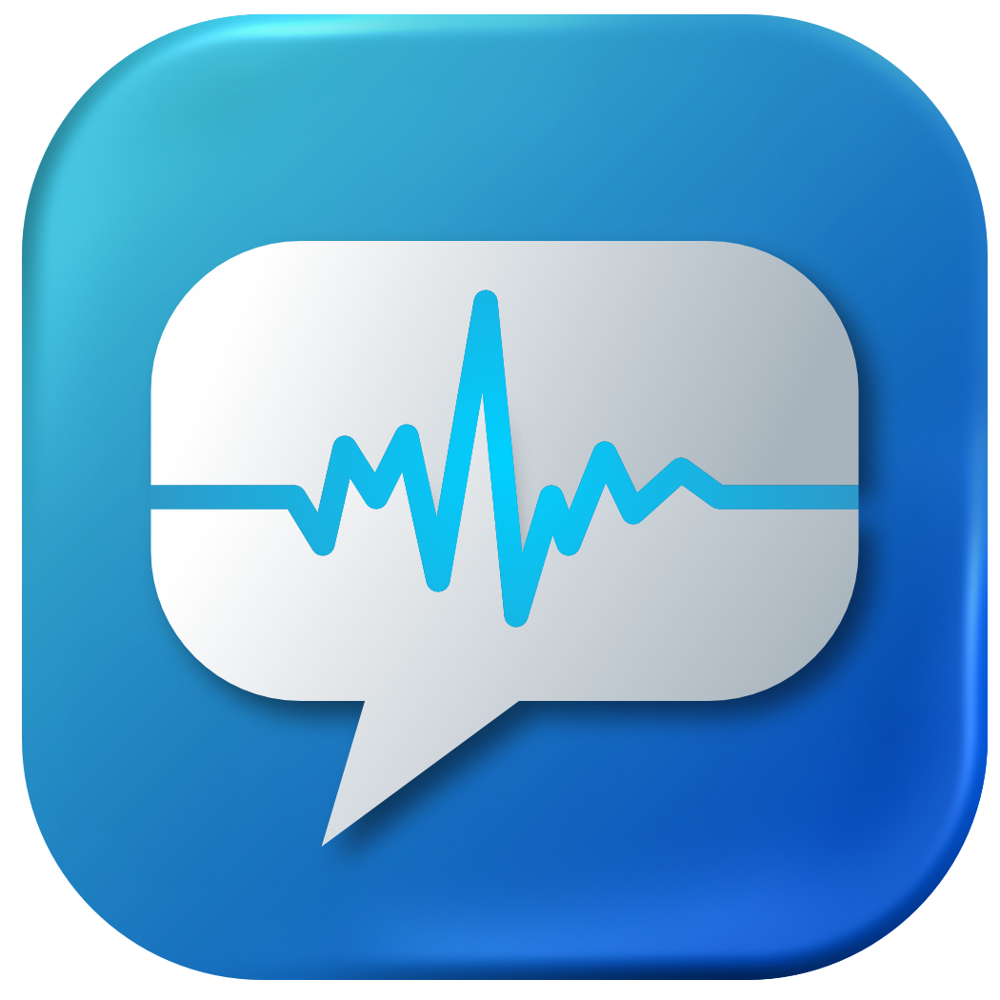

About NoteWave
AI-powered note-taking built for large lecture environments

The Friction
The Challenge
Many students struggle to balance active listening and note-taking during fast-paced lectures, particularly in large lecture halls or when audio clarity is reduced. As a result, students often produce incomplete or low-quality notes, which negatively impacts their understanding and revision.
Our Solution
NoteWave is an AI-powered platform that records lectures, transcribes them in real time, and converts them into structured summaries and easy-to-review academic notes, allowing students to focus on understanding rather than writing.
Core Innovation
Value Proposition: NoteWave is designed specifically for large lecture environments, enabling students to engage fully with lecture content while reducing the cognitive load of rapid note-taking.
How it Works
NoteWave leverages advanced AI technologies to deliver near real-time, highly accurate transcription and structured learning materials.
- Frontend: React, providing a snappy, responsive, and minimal user interface across all devices.
- Backend: Python, handling robust data processing, audio streaming, and API integrations securely.
- AI Integration: Utilizing the OpenAI Whisper API to ensure exceptional transcription quality, successfully interpreting complex academic vocabulary and strong accents in real-time.
How Student Use NoteWave
- Record lecture
- AI transcribes in real time
- Notes are structured automatically
- Review and search later
For Universities & Lecturers
- Enables lecturers to record and share lecture content
- Allows students to Allows students to access missed lectures anytime
- Supports inclusive and accessible learning environments
Target Audience
NoteWave is designed for university students in large lecture settings who require accurate, real-time transcription and structured notes. It is particularly valuable for international students and students who require accessible learning support.
Revenue Model
NoteWave operates on a freemium model, offering basic transcription for free while providing premium features such as advanced summaries, unlimited recordings, and export options for €5/month. Additional revenue is generated through advertisements and university partnerships.
Pricing & Plans
- Free version with limited transcription minutes
- Premium plan (€5/month) for unlimited features
- Advertisement support for free users
- University licensing partnerships
Why Choose NoteWave
What Makes Us Different
- Built specifically for lecture environments
- Handles strong accents and noisy classrooms
- Generates structured academic notes (not just transcripts)
- Offers affordable pricing compared to competitors like Otter.ai (Up to 40% cheaper than competitors like Otter.ai)
Why It Will Succeed
The increasing scale of university lectures and the growing demand for AI-powered educational tools create a strong opportunity for NoteWave. Its cost-effective model and potential for institutional partnerships support scalable adoption.
Market Opportunity
- 30-50 million potential users globally
- Growth in AI-powered learning tools
- Expansion of English-taught university programmes
- Strong revenue potential through subscriptions and partnerships